This week our tutorial will cover social network analysis. Social network analysis focuses on patterns of relations between actors and is a key approach to study issues like homopohily and social diffusion.
Understanding network data structures in R
One simple way to represent a graph is to list the edges, which we will refer to as an edge list. For each edge, we just list who that edge is incident on. Edge lists are therefore two column matrices (or dataframe in the language of R) that directly tell the computer which actors are tied for each edge. In a directed graph, the actors in column A are the sources of edges, and the actors in Column B receive the tie. In an undirected graph, order doesn’t matter.
Let me use a real social network data as a guiding example for the tutorial. This network is a network of scene coappearances of characters in Victor Hugo’s novel “Les Miserables.” Edge weights denote the number of such occurrences. The data source is D. E. Knuth, “The Stanford GraphBase: A Platform for Combinatorial Computing.” Addison-Wesley, Reading, MA (1993).
I converted the raw data format to make it easy for use in R. Let’s load the “lesmis_edges.csv” first, which is the edge list file.
edges <- read.csv("lesmis_edges.csv")
Let’s take a look at this dataframe using function head():
source target weight
1 1 2 1
2 1 3 8
3 1 4 10
4 1 5 1
5 1 6 1
6 1 7 1
We can see that there are three columns. The first two columns define the source and the target of the connection. The numerical values in these two columns represent different network nodes (here they represent individual characters in the novel). They do not have to be numerical IDs and we could put in actual character names instead, which is more readable but take up more storage space on our disk.
In the case of co-appearence, linkages are not directional. Thus, each pair of node IDs only appear once. For a directed network, each pair of nodes could appear twice (e.g., 1 – > 2 vs. 2 – > 1. In the first case, 1 is the sending node and in the second case, 2 is the sending node).
For the edgelist dataframe, we only report node pairs that have links. Thus the third column, which represents the intensity of the connection (i.e., edge weight), is never zero. The “weight” column could have varied values if the network is weighted. The Les Miserables network is weighted that weights represent the number of co-occurence. For some networks, egdes are not weighted (i.e., weight column = 1 for all rows). For such unweighted networks, we could omit the “weight” column.
Besides the edgelist data, when conducting social network analysis in R, we often have a second dataframe that stores node-level attributes (though it is not required to have this node-level dataframe to conduct network analysis in R). For the Les Miserables network, we have node-level attributes that store the actual charater names that the nodes correspond to and whether the character is a key character in the novel.
nodes <- read.csv("lesmis_nodes.csv")
Let’s take a look at this dataframe using function head():
id name key_character
1 1 Myriel no
2 2 Napoleon no
3 3 MlleBaptistine no
4 4 MmeMagloire no
5 5 CountessDeLo no
6 6 Geborand no
The first column “id” corresponds to the values in the “source” and “target” columns for the edgelist dataframe. For the node dataframe, each node appears once and the columns represent their corresponding attributes.
Visualizing network data in R
Now with the edgelist and the node-level attributes, we are ready to construct a social network using R! Specifically, we will use the “igraph” pacakge in R. If this is your first time using it, again, remeber you need to install it first.
install.packages("igraph")
Then we can activate this package:
Then we can construct the network using function graph_from_data_frame(). The first parameter is our edgelist dataframe. The second parameter defines whether or not the network is directed. The third defines node-level attributes:
g <- graph_from_data_frame(edges, directed = FALSE, vertices = nodes)
We can check some quick statistics for this network.
#Number of nodes
vcount(g)
#Number of edges
ecount(g)
#Is directed?
is_directed(g)
#Is weighted?
is_weighted(g)
#node names
V(g)$names
#edge weigths
E(g)$weight
Let’s also quickly plot it!
plot(
g,
main = "Les Misérables Character Co-appearance Network"
)
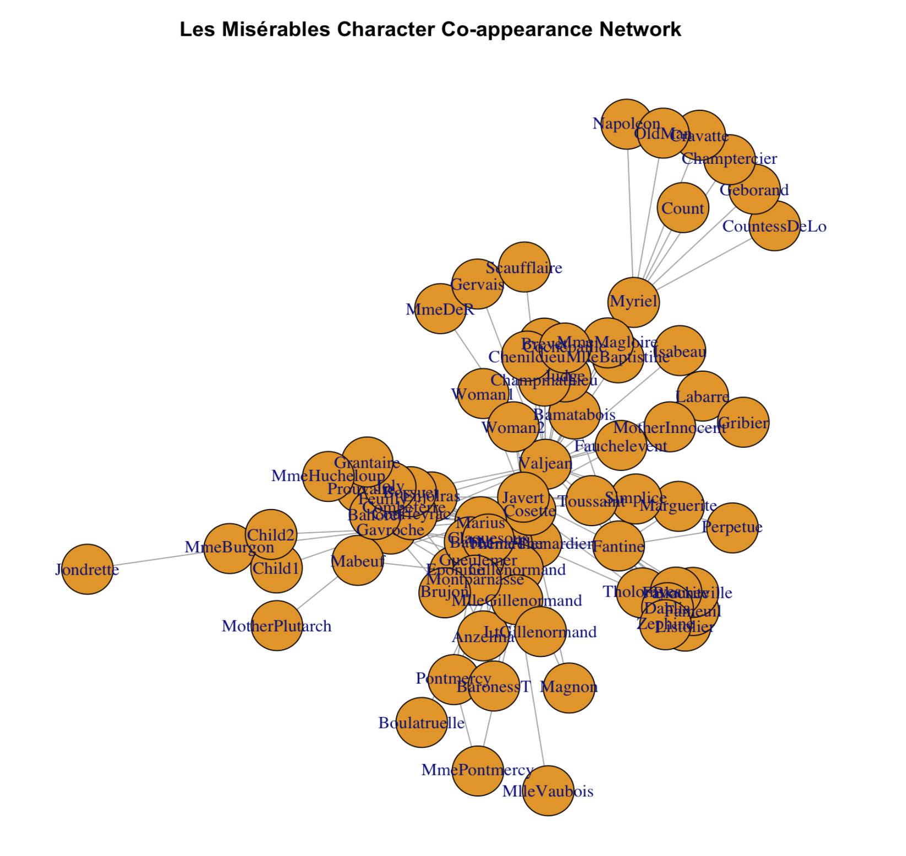
It looks okay but we can for sure make it prettier!
set.seed(12) # for reproducible layout
plot(
g,
layout = layout_with_fr(g),
vertex.label.cex = 0.7,
vertex.size = 6,
edge.width = 0.5 * E(g)$weight, # edge widths scale with weight
main = "Les Misérables Character Co-appearance Network"
)
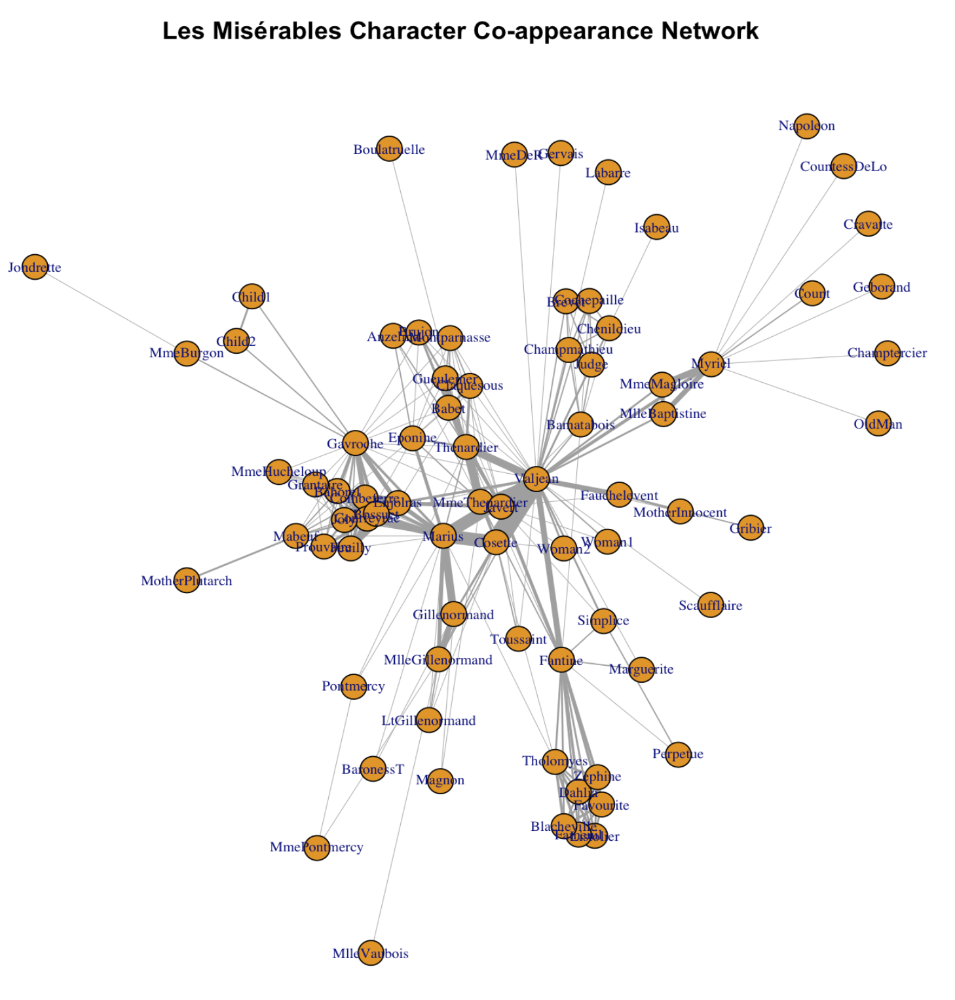
Wow! Much better! So what we did? layout_with_fr() is a function that forces R to arrange the network using the so-called “Fruchterman and Reingold algorithm”. Essentially, nodes with denser connections are put closer under this algorithm. vertex.label.cex tunes the label size for the node label (character name in this case). vertex.size tunes the size for the node. edge.width adjusts for the width of the edges. There are far more parameters that you can tune! Check out https://igraph.org
Now let’s further improve the plot! Recall we have this one additional column called “key_character” for the node dataframe. Let’s highlight the main/key characters with a different color.
V(g)$color <- "blue"
V(g)$color[V(g)$key_character == "yes"] <- "red"
set.seed(12) # for reproducible layout
plot(
g,
layout = layout_with_fr(g),
vertex.label.cex = 0.7,
vertex.size = 6,
vertex.color=V(g)$color,
edge.width = 0.5 * E(g)$weight, # edge widths scale with weight
main = "Les Misérables Character Co-appearance Network"
)
legend(
"topleft",
legend = c("Key character", "Other character"),
pt.bg = c("red", "blue"),
pch = 21,
bty = "n",
cex = 0.8
)
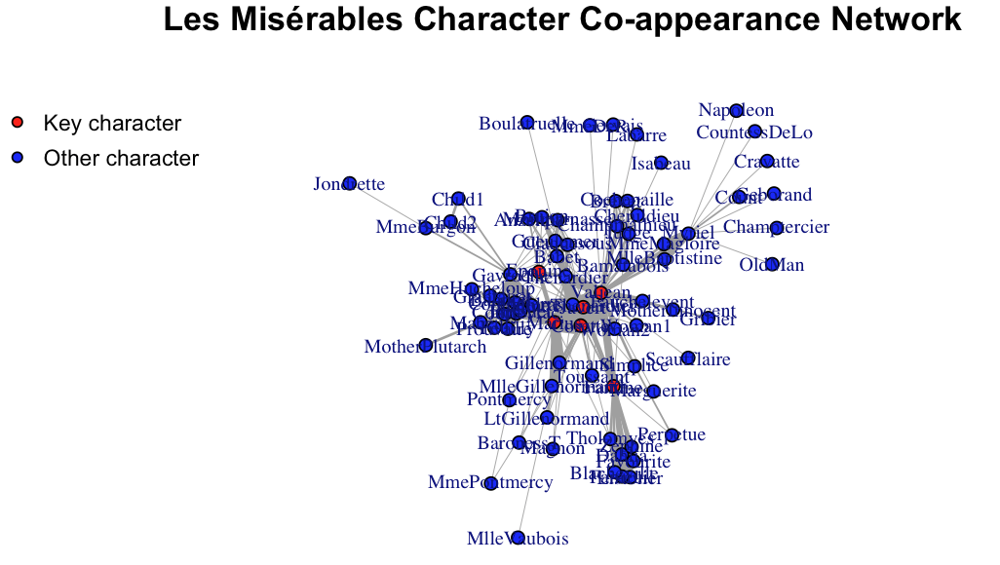
Main characters are indeed more central in the network!
Now let’s try to explore the network more to quantitatively describe its structure.
Key network measures
Degree (“How many friends do I have?”)
For an undirected network, the degree of a node n is the count of edges incident on n. For a directed network, a node n can have in-degree (count of inflows) and out-degree (cout of outflows)
Let’s sort the result.
Output:
Napoleon CountessDeLo Geborand Champtercier
1 1 1 1
Cravatte Count OldMan Labarre
1 1 1 1
MmeDeR Isabeau Gervais Scaufflaire
1 1 1 1
Boulatruelle Gribier Jondrette MlleVaubois
1 1 1 1
MotherPlutarch Marguerite Perpetue Woman1
1 2 2 2
MotherInnocent MmeBurgon Magnon MmePontmercy
2 2 2 2
BaronessT Child1 Child2 MlleBaptistine
2 2 2 3
MmeMagloire Pontmercy Anzelma Woman2
3 3 3 3
Toussaint Fauchelevent Simplice LtGillenormand
3 4 4 4
Judge Champmathieu Brevet Chenildieu
6 6 6 6
Cochepaille Listolier Fameuil Blacheville
6 7 7 7
Favourite Dahlia Zephine Gillenormand
7 7 7 7
MlleGillenormand Brujon MmeHucheloup Bamatabois
7 7 7 8
Tholomyes Prouvaire Montparnasse Myriel
9 9 9 10
Grantaire Gueulemer Babet Claquesous
10 10 10 10
MmeThenardier Cosette Eponine Mabeuf
11 11 11 11
Combeferre Feuilly Bahorel Joly
11 11 12 12
Courfeyrac Bossuet Fantine Enjolras
13 13 15 15
Thenardier Javert Marius Gavroche
16 17 19 22
Valjean
36
If the network is directed, we can calculate in-degree:
Weighted degree (strength)
The strength of node n is the sum of edge weights.
Napoleon CountessDeLo Geborand Champtercier
1 1 1 1
Cravatte OldMan Labarre MmeDeR
1 1 1 1
Isabeau Gervais Scaufflaire Boulatruelle
1 1 1 1
Jondrette MlleVaubois Count Gribier
1 1 2 2
Magnon MmePontmercy BaronessT Marguerite
2 2 2 3
Perpetue Woman1 Pontmercy MmeBurgon
3 3 3 3
MotherPlutarch MotherInnocent Toussaint Anzelma
3 4 4 5
Woman2 LtGillenormand Child1 Child2
5 5 5 5
MmeHucheloup Simplice Bamatabois Brevet
7 8 11 11
Chenildieu Cochepaille Montparnasse Brujon
11 11 12 13
Fauchelevent Judge Champmathieu Mabeuf
14 14 14 16
Grantaire MlleBaptistine MmeMagloire Eponine
16 17 19 19
Prouvaire Claquesous MlleGillenormand Listolier
19 20 23 24
Fameuil Zephine Blacheville Dahlia
24 24 25 25
Gueulemer Tholomyes Favourite Babet
25 26 26 27
Gillenormand Myriel MmeThenardier Feuilly
29 31 34 38
Bahorel Joly Fantine Javert
39 43 47 47
Gavroche Thenardier Bossuet Cosette
56 61 66 68
Combeferre Courfeyrac Enjolras Marius
68 84 91 104
Valjean
158
Global Clustering Coefficient (GCC)
The global clustering coefficient measures the tendency of nodes in a network to cluster together. It quantifies the overall connectivity and cohesion of the network by considering all possible triplets of nodes. In essence, it indicates how much the network resembles a collection of closely connected groups (clusters).
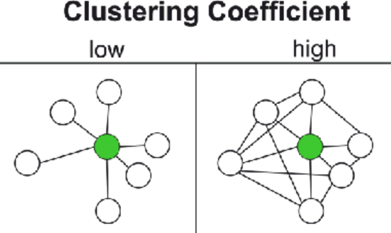
transitivity(g, "global")
The output:
Wow the network is very cohesive because GCC is between 0 and 1.
Average path length (APL)
Average Path Length (APL) is a key indicator of how interconnected a network is, with shorter APLs generally indicating a more efficient network. APL is calculated by finding the shortest path between all pairs of nodes in the network and then averaging those shortest path lengths.
###
average.path.length(g,directed = FALSE)
The output is:
Essentially, for any two random nodes in the network, it on vargae takes 4.86 steps to reach from one node to the other node.
Assortativity
The assortativity coefficient is positive is similar vertices (based on some external property) tend to connect to each, and negative otherwise. Just like the concept of homophoily!
assortativity(g, as.factor(V(g)$key_character), directed = FALSE)
The output is:
Essentially, main characters engage with supporting characters!
Betweenness centrality
Betweenness centrality is a network analysis metric that measures the extent to which a node lies on shortest paths between other nodes in a network. It quantifies the importance of a node in connecting different parts of the network. A node with high betweenness centrality is often a “bridge” or “connector” between various nodes or groups of nodes in the network.
sort(betweenness(g, weights = NA))
Napoleon MlleBaptistine MmeMagloire CountessDeLo
0.0000000 0.0000000 0.0000000 0.0000000
Geborand Champtercier Cravatte Count
0.0000000 0.0000000 0.0000000 0.0000000
OldMan Labarre Marguerite MmeDeR
0.0000000 0.0000000 0.0000000 0.0000000
Isabeau Gervais Listolier Fameuil
0.0000000 0.0000000 0.0000000 0.0000000
Blacheville Favourite Dahlia Zephine
0.0000000 0.0000000 0.0000000 0.0000000
Perpetue Scaufflaire Woman1 Judge
0.0000000 0.0000000 0.0000000 0.0000000
Champmathieu Brevet Chenildieu Cochepaille
0.0000000 0.0000000 0.0000000 0.0000000
Boulatruelle Anzelma Woman2 MotherInnocent
0.0000000 0.0000000 0.0000000 0.0000000
Gribier Jondrette MlleVaubois LtGillenormand
0.0000000 0.0000000 0.0000000 0.0000000
BaronessT Prouvaire MotherPlutarch Toussaint
0.0000000 0.0000000 0.0000000 0.0000000
Child1 Child2 MmeHucheloup Grantaire
0.0000000 0.0000000 0.0000000 0.4285714
Magnon MmePontmercy Brujon Combeferre
0.6190476 1.0000000 1.2500000 3.5629149
Feuilly Bahorel Joly Montparnasse
3.5629149 6.2286417 6.2286417 11.0404151
Claquesous Gueulemer Babet Courfeyrac
13.8561420 14.1370943 14.1370943 15.0110352
Pontmercy Bamatabois Simplice Eponine
19.7375000 22.9166667 24.6248408 32.7395194
Gillenormand Cosette MmeBurgon Fauchelevent
57.6002715 67.8193223 75.0000000 75.5000000
Mabeuf MmeThenardier Bossuet Tholomyes
78.8345238 82.6568934 87.6479030 115.7936423
Enjolras MlleGillenormand Javert Thenardier
121.2770669 135.6569444 154.8449450 213.4684805
Fantine Marius Gavroche Myriel
369.4869418 376.2925926 470.5706319 504.0000000
Valjean
1624.4688004
There are many other types of centralities (eigenvector centrality, closeness centrality, degree centrality) that measure the importance of different nodes.
Visualizing Key Measures
Let’s try to visualize some of the key measures on the network plot!
For example, we can make node size proportional to degree:
V(g)$size <- degree(g)
set.seed(12) # for reproducible layout
plot(
g,
layout = layout_with_fr(g),
vertex.label.cex = 0.7,
vertex.size = V(g)$size / 2,
edge.width = 0.5 * E(g)$weight, # edge widths scale with weight
main = "Les Misérables Character Co-appearance Network"
)
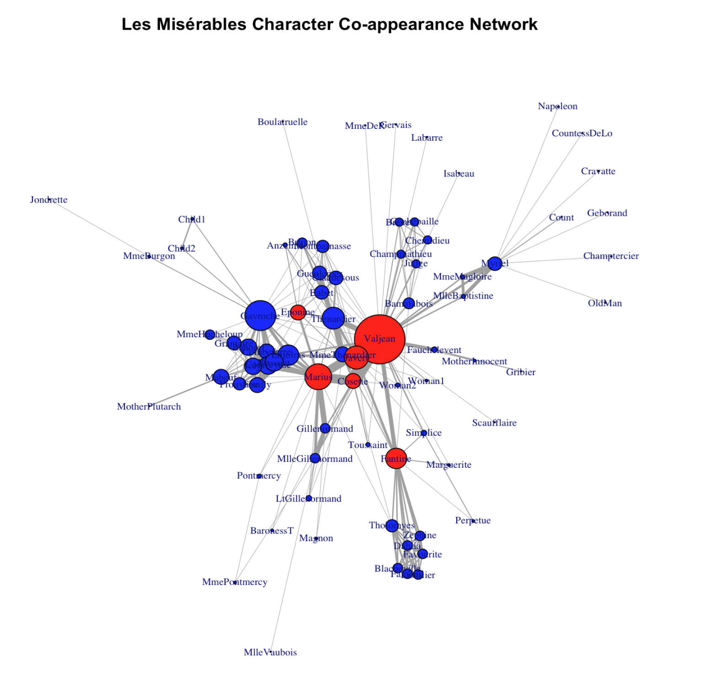
For example, we can make node size proportional to betweenness centrality measure:
V(g)$size <- betweenness(g, weights = NA)
set.seed(12) # for reproducible layout
plot(
g,
layout = layout_with_fr(g),
vertex.label.cex = 0.7,
vertex.size = V(g)$size / 100,
edge.width = 0.5 * E(g)$weight, # edge widths scale with weight
main = "Les Misérables Character Co-appearance Network"
)
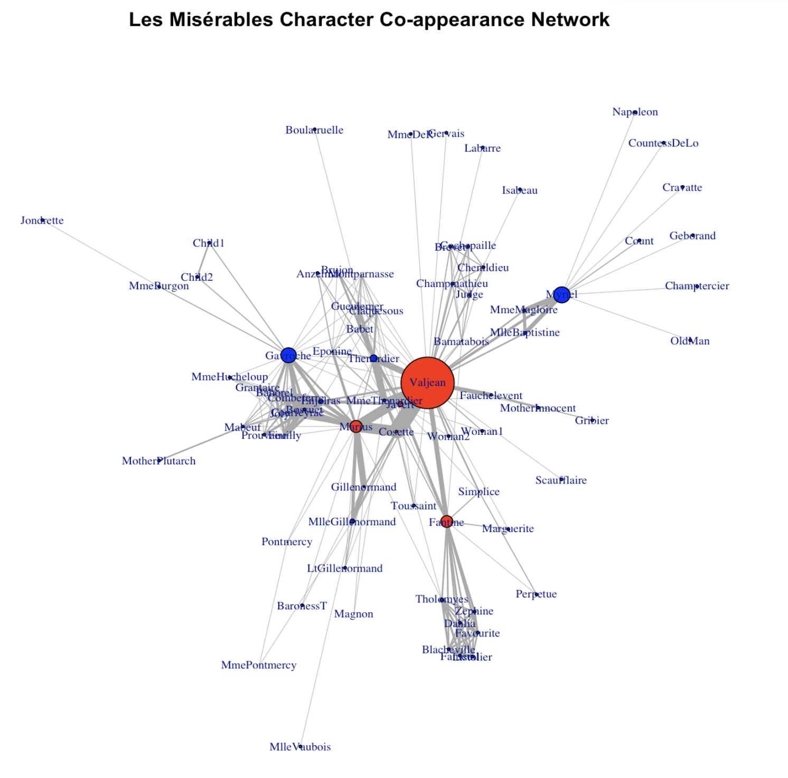
Benchmark our empirical network
I just introduced the measure of GCC and APL. You may wonder, for our empirical network, is the GCC/APL high or low? We often need to benchmark it to a random graph to answer this question.
A random graph (also known as Erdős–Rényi random graph) preseves the same number of nodes and edges for an empirical network. However, the edges are randomly conencted for the random network.
set.seed(123)
n <- vcount(g)
m <- ecount(g)
g_r <- sample_gnm(n, m, directed = FALSE, loops = FALSE)
gcc_rand <- transitivity(g_r, type = "global")
apl_rand <- average.path.length(g_r, directed = FALSE)
The GCC for the random network is only 0.0745003 and the APL is 2.471634. What is the implication? The random network is less locally clustered but more globally connected!
set.seed(12) # for reproducible layout
plot(
g_r,
layout = layout_with_fr(g_r),
vertex.label = NA,
vertex.size = 5,
edge.width = 1,
main = "Random Network"
)
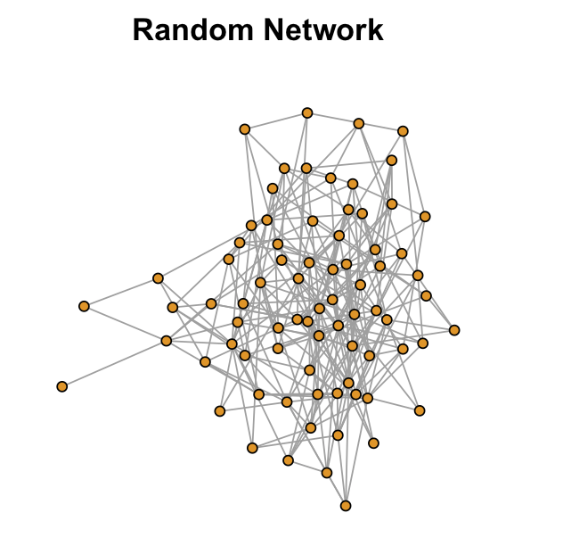
Can we have both high GCC and low APL? Yes! The small-world network!
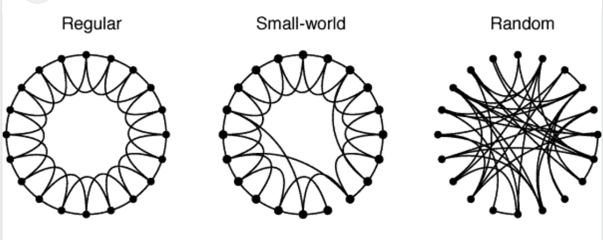
Find local clusters/communities
There are multiple community detection methods. louvain is a popular one and it works for weighted network.
Community detection (weighted Louvain)
com <- cluster_louvain(g, weights = E(g)$weight)
# "Number of communities found"
length(com)
V(g)$community <- membership(com)
V(g)$color <- V(g)$community
set.seed(12)
plot(
g,
layout = layout_with_fr(g),
vertex.label.cex = 0.7,
vertex.label.color= "black",
vertex.size = 5,
vertex.color= V(g)$color,
edge.width = 0.5 * E(g)$weight,
main = "Les Misérables – Louvain Communities"
)
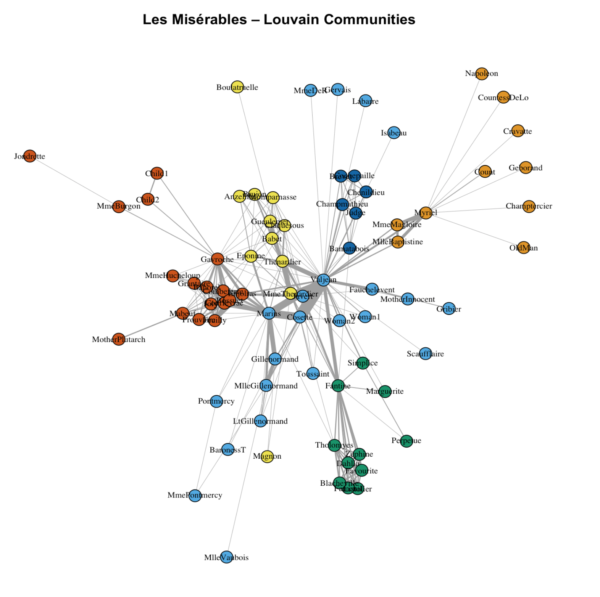
Week 4 Social Network Analysis
This week our tutorial will cover social network analysis. Social network analysis focuses on patterns of relations between actors and is a key approach to study issues like homopohily and social diffusion.
4.1 Understanding network data structures in R
One simple way to represent a graph is to list the edges, which we will refer to as an edge list. For each edge, we just list who that edge is incident on. Edge lists are therefore two column matrices (or dataframe in the language of R) that directly tell the computer which actors are tied for each edge. In a directed graph, the actors in column A are the sources of edges, and the actors in Column B receive the tie. In an undirected graph, order doesn’t matter.
Let me use a real social network data as a guiding example for the tutorial. This network is a network of scene coappearances of characters in Victor Hugo’s novel “Les Miserables.” Edge weights denote the number of such occurrences. The data source is D. E. Knuth, “The Stanford GraphBase: A Platform for Combinatorial Computing.” Addison-Wesley, Reading, MA (1993).
I converted the raw data format to make it easy for use in R. Let’s load the “lesmis_edges.csv” first, which is the edge list file.
Let’s take a look at this dataframe using function head():
We can see that there are three columns. The first two columns define the source and the target of the connection. The numerical values in these two columns represent different network nodes (here they represent individual characters in the novel). They do not have to be numerical IDs and we could put in actual character names instead, which is more readable but take up more storage space on our disk.
In the case of co-appearence, linkages are not directional. Thus, each pair of node IDs only appear once. For a directed network, each pair of nodes could appear twice (e.g., 1 – > 2 vs. 2 – > 1. In the first case, 1 is the sending node and in the second case, 2 is the sending node).
For the edgelist dataframe, we only report node pairs that have links. Thus the third column, which represents the intensity of the connection (i.e., edge weight), is never zero. The “weight” column could have varied values if the network is weighted. The Les Miserables network is weighted that weights represent the number of co-occurence. For some networks, egdes are not weighted (i.e., weight column = 1 for all rows). For such unweighted networks, we could omit the “weight” column. Besides the edgelist data, when conducting social network analysis in R, we often have a second dataframe that stores node-level attributes (though it is not required to have this node-level dataframe to conduct network analysis in R). For the Les Miserables network, we have node-level attributes that store the actual charater names that the nodes correspond to and whether the character is a key character in the novel.
Let’s take a look at this dataframe using function head():
The first column “id” corresponds to the values in the “source” and “target” columns for the edgelist dataframe. For the node dataframe, each node appears once and the columns represent their corresponding attributes.
4.2 Visualizing network data in R
Now with the edgelist and the node-level attributes, we are ready to construct a social network using R! Specifically, we will use the “igraph” pacakge in R. If this is your first time using it, again, remeber you need to install it first.
Then we can activate this package:
Then we can construct the network using function graph_from_data_frame(). The first parameter is our edgelist dataframe. The second parameter defines whether or not the network is directed. The third defines node-level attributes:
We can check some quick statistics for this network.
Let’s also quickly plot it!
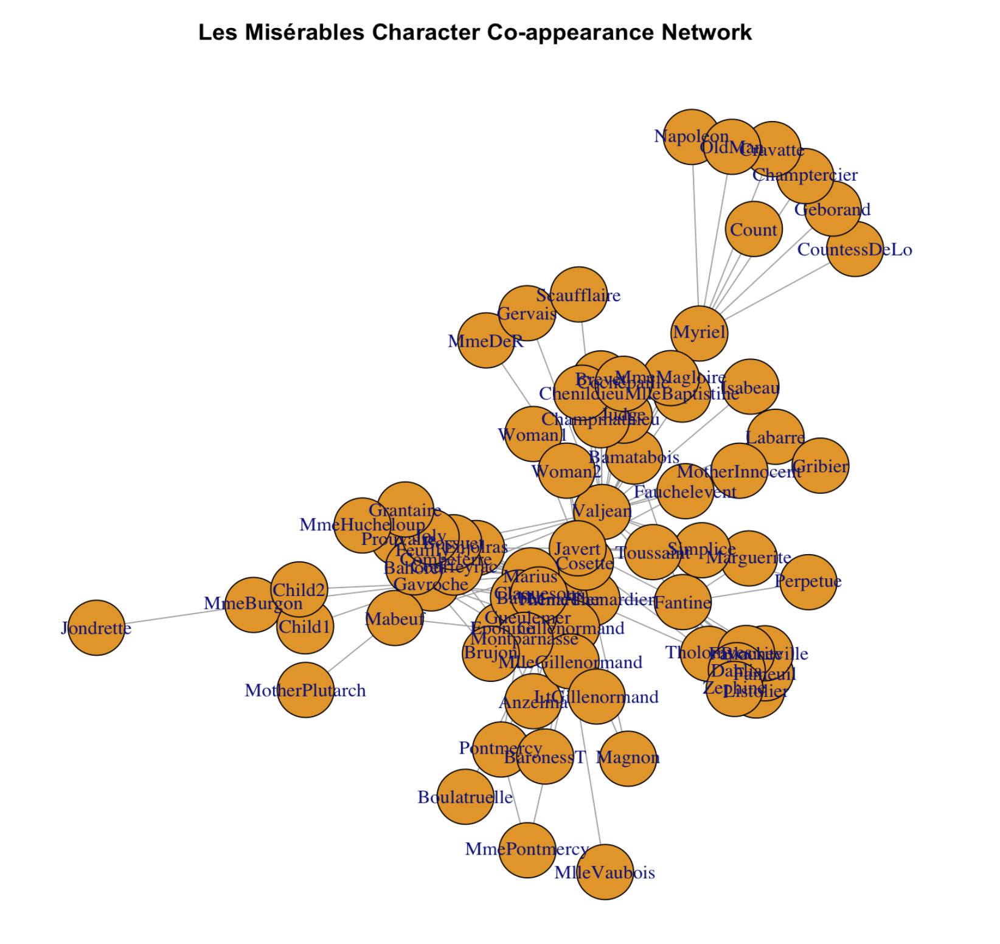
It looks okay but we can for sure make it prettier!
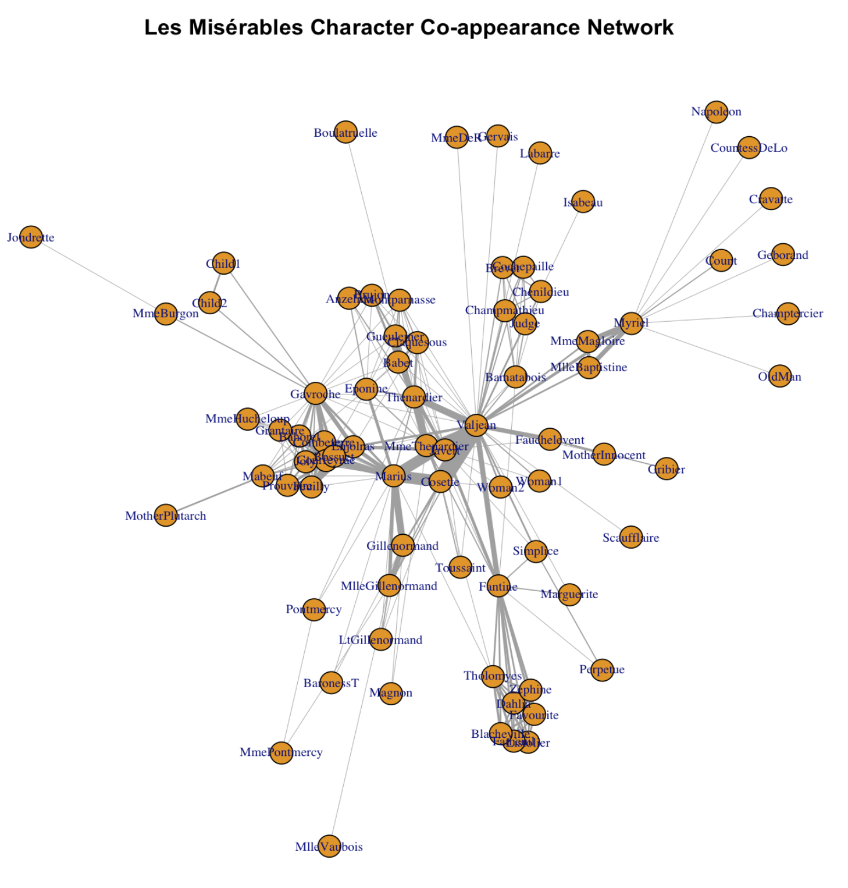
Wow! Much better! So what we did? layout_with_fr() is a function that forces R to arrange the network using the so-called “Fruchterman and Reingold algorithm”. Essentially, nodes with denser connections are put closer under this algorithm. vertex.label.cex tunes the label size for the node label (character name in this case). vertex.size tunes the size for the node. edge.width adjusts for the width of the edges. There are far more parameters that you can tune! Check out https://igraph.org
Now let’s further improve the plot! Recall we have this one additional column called “key_character” for the node dataframe. Let’s highlight the main/key characters with a different color.
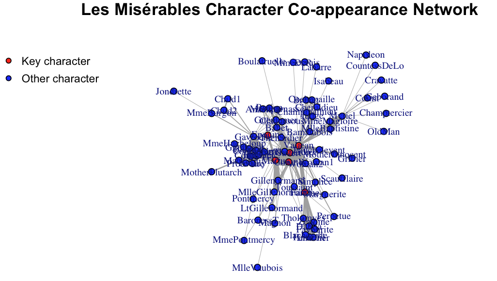
Main characters are indeed more central in the network!
Now let’s try to explore the network more to quantitatively describe its structure.
4.3 Key network measures
4.3.1 Degree (“How many friends do I have?”)
For an undirected network, the degree of a node n is the count of edges incident on n. For a directed network, a node n can have in-degree (count of inflows) and out-degree (cout of outflows)
Let’s sort the result.
Output:
If the network is directed, we can calculate in-degree:
4.3.2 Weighted degree (strength)
The strength of node n is the sum of edge weights.
4.3.3 Global Clustering Coefficient (GCC)
The global clustering coefficient measures the tendency of nodes in a network to cluster together. It quantifies the overall connectivity and cohesion of the network by considering all possible triplets of nodes. In essence, it indicates how much the network resembles a collection of closely connected groups (clusters).
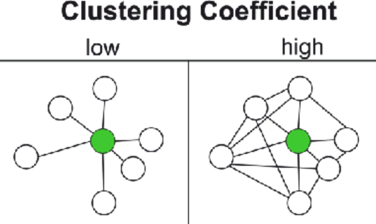
The output:
Wow the network is very cohesive because GCC is between 0 and 1.
4.3.4 Average path length (APL)
Average Path Length (APL) is a key indicator of how interconnected a network is, with shorter APLs generally indicating a more efficient network. APL is calculated by finding the shortest path between all pairs of nodes in the network and then averaging those shortest path lengths. ###
The output is:
Essentially, for any two random nodes in the network, it on vargae takes 4.86 steps to reach from one node to the other node.
4.3.5 Assortativity
The assortativity coefficient is positive is similar vertices (based on some external property) tend to connect to each, and negative otherwise. Just like the concept of homophoily!
The output is:
Essentially, main characters engage with supporting characters!
4.3.6 Betweenness centrality
Betweenness centrality is a network analysis metric that measures the extent to which a node lies on shortest paths between other nodes in a network. It quantifies the importance of a node in connecting different parts of the network. A node with high betweenness centrality is often a “bridge” or “connector” between various nodes or groups of nodes in the network.
There are many other types of centralities (eigenvector centrality, closeness centrality, degree centrality) that measure the importance of different nodes.
4.4 Visualizing Key Measures
Let’s try to visualize some of the key measures on the network plot!
For example, we can make node size proportional to degree:
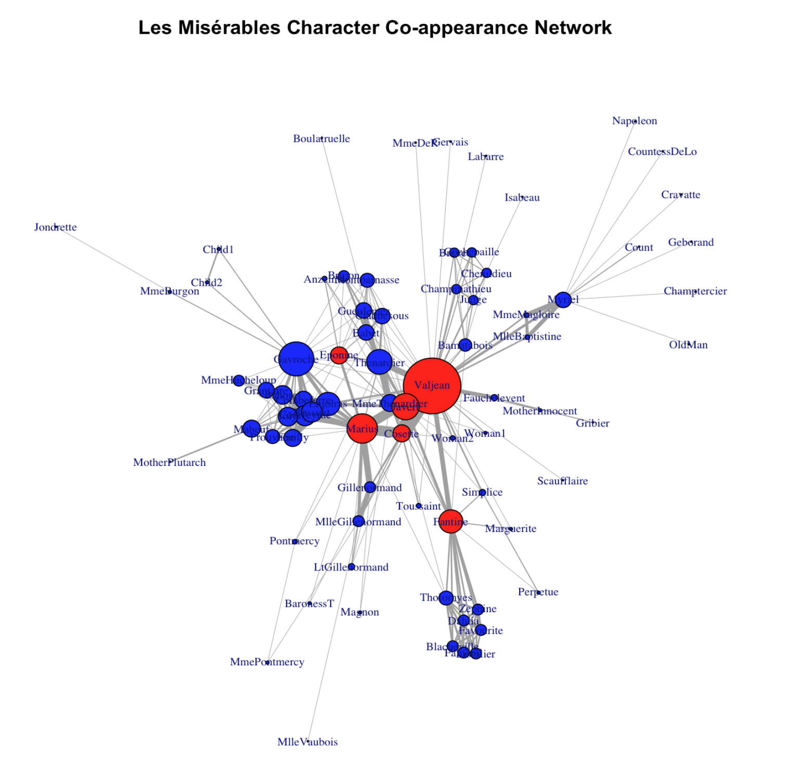
For example, we can make node size proportional to betweenness centrality measure:
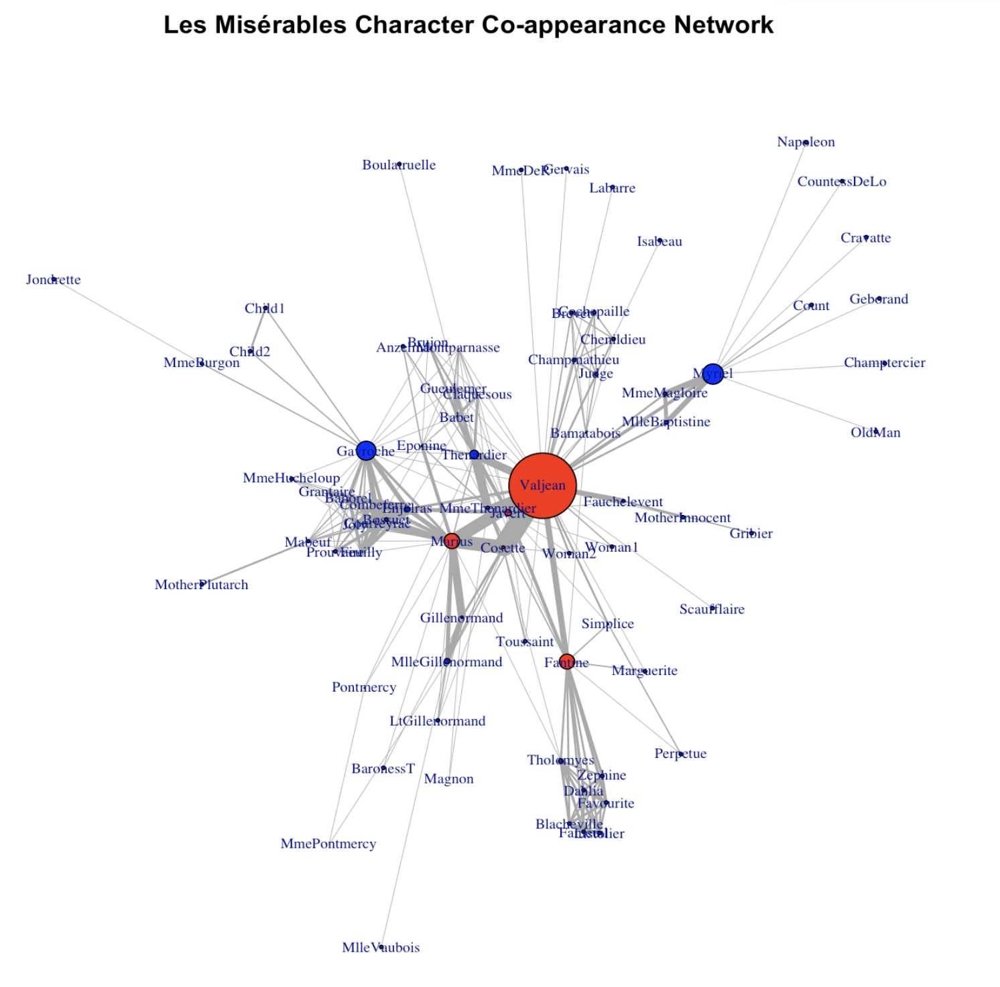
4.5 Benchmark our empirical network
I just introduced the measure of GCC and APL. You may wonder, for our empirical network, is the GCC/APL high or low? We often need to benchmark it to a random graph to answer this question.
A random graph (also known as Erdős–Rényi random graph) preseves the same number of nodes and edges for an empirical network. However, the edges are randomly conencted for the random network.
The GCC for the random network is only 0.0745003 and the APL is 2.471634. What is the implication? The random network is less locally clustered but more globally connected!
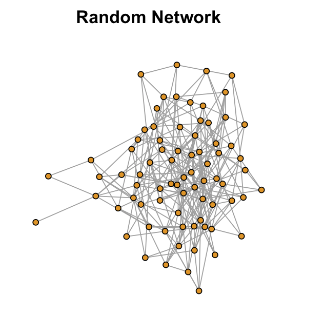
Can we have both high GCC and low APL? Yes! The small-world network!
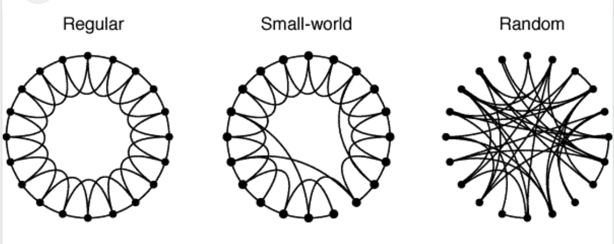
4.6 Find local clusters/communities
There are multiple community detection methods. louvain is a popular one and it works for weighted network.
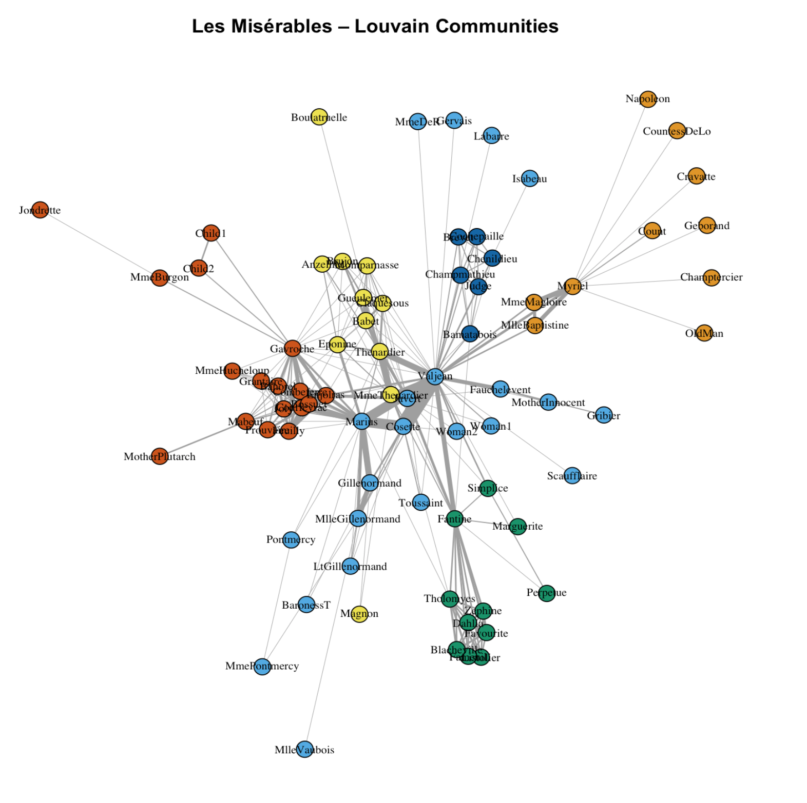
4.6.1 Other Resources
Social network analysis is a powerful tool and there are much more could be done to our data! Check out https://r.igraph.org/ for more network analysis techniques using R.
If you are interested in social network datasets, check out https://icon.colorado.edu/networks
Also check out this awesome interactive social network page on “Six Degrees of Francis Bacon”: http://sixdegreesoffrancisbacon.com/?ids=10000473&min_confidence=60&type=network